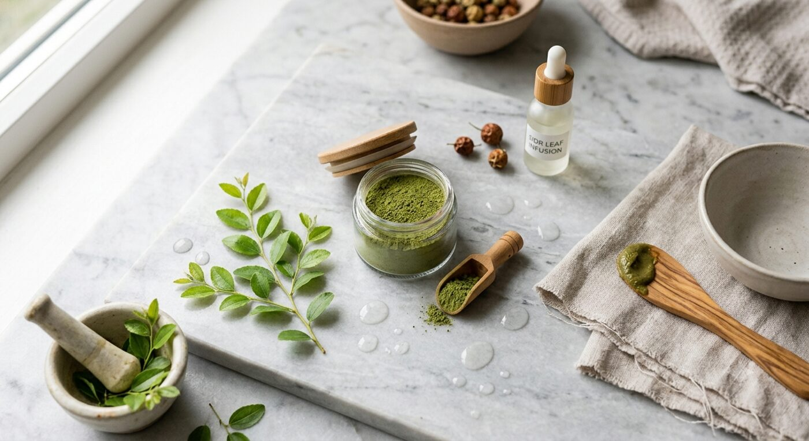

Un shampoing végétal utilisé depuis plus de trois mille ans
La poudre de sidr, obtenue à partir des feuilles séchées et finement moulues du jujubier, est utilisée depuis plus de trois mille ans par les femmes du Maghreb, du Moyen-Orient et d'Afrique subsaharienne pour entretenir leurs cheveux (Biorient, guide de la poudre de sidr). Cette pratique est également ancrée dans la tradition islamique : plusieurs hadiths recommandent l'usage du sidr comme agent nettoyant, sous forme de savon ou de shampoing (Muslimahealth.co.za, « Sidr leaves »).
Ce que contiennent réellement les feuilles de sidr
Les feuilles de sidr sont riches en saponosides (saponines) — des molécules végétales moussantes capables de décoller les impuretés et le sébum en excès — ainsi qu'en mucilages, qui leur donnent une texture gélifiée douce au contact et en flavonoïdes (La Vie Nature, poudres ayurvédiques). Des travaux de recherche sur Ziziphus spina-christi ont par ailleurs isolé l'acide bétulinique, un composé aux propriétés anti-inflammatoires documentées (PubMed, dérivé de la bétuline dans Z. spina-christi).
Un nettoyant doux, aux propriétés antimicrobiennes mesurées
Les saponines des feuilles de sidr ne se contentent pas de nettoyer : elles ont aussi montré, in vitro, une activité antimicrobienne, notamment contre certaines bactéries à Gram positif présentes sur le cuir chevelu (Minature Wellness, bienfaits de la poudre de sidr). Plus largement, des extraits de feuilles de Ziziphus spina-christi ont montré une activité antibactérienne contre différentes souches de bactéries à Gram négatif en laboratoire (ResearchGate, phytochimie et pharmacologie de Z. spina-christi).
Un allié pour les cuirs chevelus sensibles et les colorations végétales
Contrairement à certains tensioactifs de synthèse, le sidr est généralement décrit comme un nettoyant doux qui retire l'excès de sébum sans agresser autant le film hydrolipidique du cuir chevelu (Biorient). Autre particularité appréciée dans les rituels capillaires naturels : la poudre de sidr ne fait pas dégorger les colorations végétales comme le henné, et sa teneur en potassium contribuerait même à en prolonger la tenue (La Vie Nature, sidr et cheveux colorés).
Pousse, densité, anti-chute : ce que dit (et ne dit pas) la science
De nombreux sites marchands affirment que le sidr « stimule la pousse » ou « réduit la chute » des cheveux, parfois en citant des vitamines A, B, C, D présentes dans la feuille. Il faut ici distinguer deux niveaux d'information : d'une part, des propriétés mesurées en laboratoire sur les extraits de Ziziphus (activité antimicrobienne, anti-inflammatoire, antioxydante) qui peuvent indirectement favoriser un cuir chevelu sain ; d'autre part, des allégations de repousse ou de densification qui restent, à ce jour, largement issues de la tradition et du marketing plutôt que d'essais cliniques randomisés publiés spécifiquement sur la chevelure humaine. Nous préférons le dire clairement plutôt que de reprendre ces promesses telles quelles.
Comment utiliser la poudre de sidr sur cheveux
Dans la pratique la plus courante, on mélange environ deux cuillères à café de poudre de sidr avec de l'eau chaude jusqu'à obtenir une pâte lisse, que l'on applique sur cheveux humides, des racines aux pointes, avant de laisser poser 10 à 30 minutes sous une charlotte puis de rincer abondamment (Biorient). Beaucoup d'utilisatrices alternent : un shampoing doux classique pour les lavages fréquents, et le sidr une fois par semaine comme soin nettoyant en profondeur (Nilabeautys, feuille de jujubier). Retrouvez des recettes détaillées, y compris pour les cheveux colorés ou frisés, dans notre article 5 recettes de masques maison à la poudre de sidr.

Le sidr n'est pas un shampoing miracle : c'est un nettoyant traditionnel dont certaines propriétés (antimicrobienne, anti-inflammatoire) commencent à être documentées, sans que toutes les promesses commerciales soient encore validées scientifiquement.
Sources
- Biorient — Sidr en poudre pour les cheveux : le guide complet
- Muslimahealth.co.za — Sidr leaves
- La Vie Nature — Les bienfaits de la poudre de sidr
- PubMed — Novel betulin derivative in Ziziphus spina-christi
- ResearchGate — Phytochemistry and pharmacologic properties of Ziziphus spina-christi
- La Vie Nature — La poudre de sidr pour les cheveux colorés
- Nilabeautys — Feuille de jujubier (Sidr) : bienfaits, utilisations